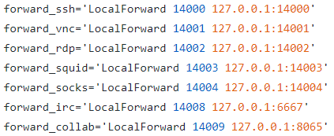

How the connection are forwarded from the client
Configuration of the
clientThese are the connection in the configuration file of the Client
(telesploit-client/linux/client-configs/client.cfg)
 all these settings are saved by setup_client.sh in
./client-configs/config
example: LocalForward SSH connection will
forwarded the connections for the port of the Client(attacker machine)
14000 to
port 127.0.0.1:
14000 of the Server
configure softwares:
this mean that when we want to use the
softwares Mattermost and IRC we have to to configure like this the connections
◇
IRC → from a
IRC software(like Hexchat) add Network with server 127.0.0.1/14008, connect to it and then join to a channel. We can
also create also multiple channels each one with different arguments
◇
Mattermost → to use it
we have to configure a HTTP proxy (like FoxyProxy) to use proxy 127.0.0.1 on port 14003, so Firefox will send all
HTTP information on port 14003 and then they will be tunnelled to the relay. Now we can access on Mattermost on page
127.0.0.1:14009
◇
Run via a GUI: we can use the software
https://remmina.org/ to connect via RDP, VNC, SSH and SFTP
Also each one in
a different tab contemporaneously
◇ Connect from the smartphone(android) → we can use “Mobile SSH” +
“AndroIRC”
Configuration of the server(dropbox raspberrypi)
These are the
connection in the configuration file of the server (telesploit-server/server.cfg)
example:
RemoteForward SSH connection for port
14000 of the relay will be forwarded to
port 127.0.0.1:
22 of the Client